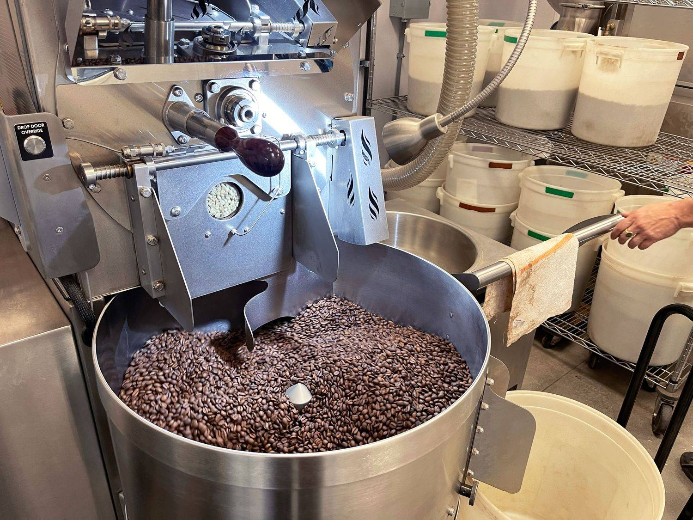
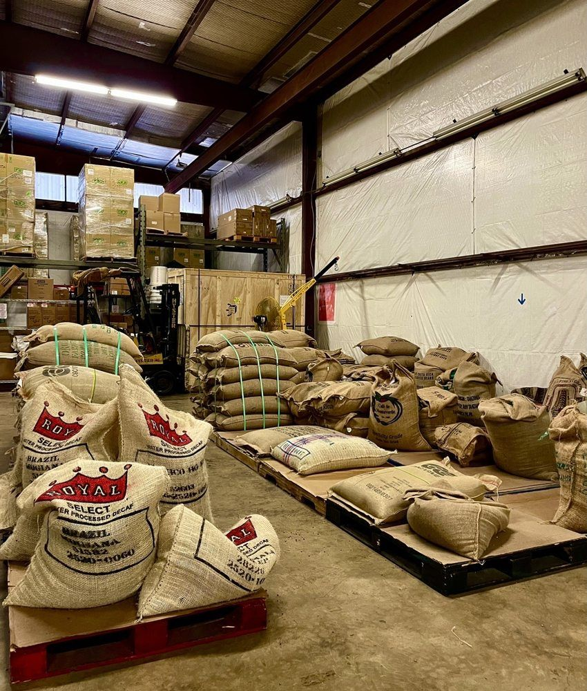
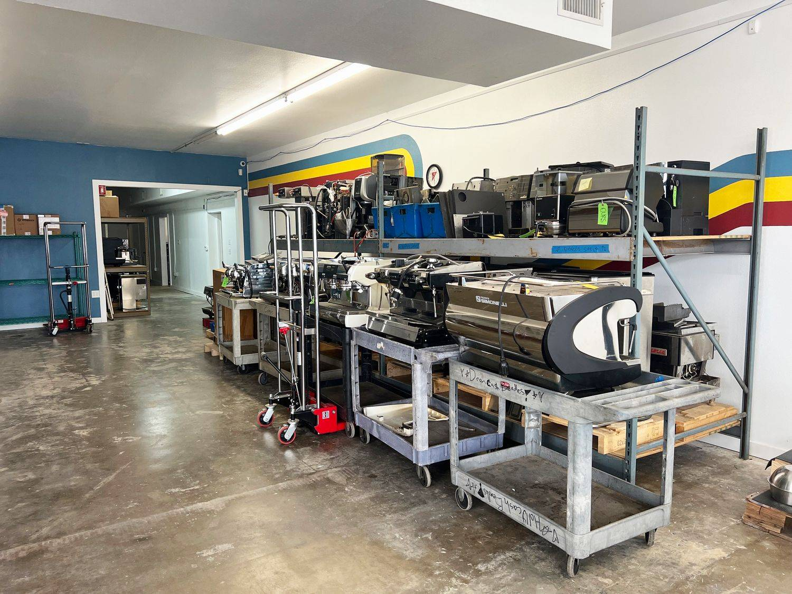
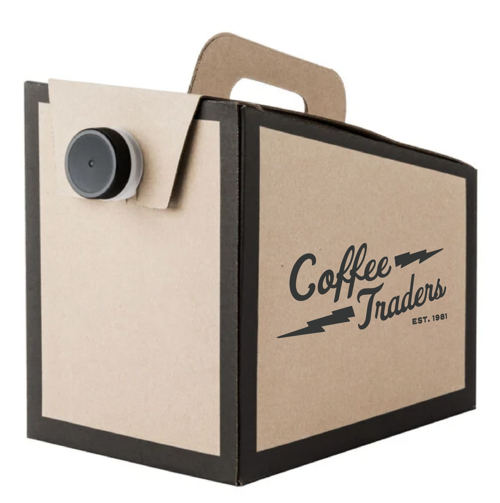

Wholesale coffee roaster · Austin, TX
Wholesale coffee, roasted for your counter.
We sold coffee wholesale before we ever poured a cup ourselves. Cafes, restaurants, offices, campuses and grocers across Central Texas count on us for fresh roasts, sharp training and fast delivery.

What you get
A roaster, a trainer and a tech crew in one call
- Help choosing the blend or roast your customers will love
- Menu building
- Free tastings during consultation, as many as it takes
- Custom blends
- Private labeling
- Cafe layout consultation
- Espresso and latte art training for your staff, plus continued education
- Point-of-sale recommendations
- Help with product and brand selection
- A weekly call list so you never forget to re-order
- $5 delivery on 10+ lbs of coffee or four cases of iced tea packs
- Guaranteed next-day delivery in Central Austin
- A real person every time you call

“We’ve had an amazing experience working with Texas Coffee Traders. Their roasting quality is consistently excellent, and their service is just as impressive. They’re professional, reliable, and always easy to work with.”
How it works
From first sip to standing order
- 01
Taste
Free tastings during your consultation, as many as it takes to get it right.
- 02
Dial in
Pick a house blend or build your own. Private label if you want your name on the bag.
- 03
Train
Espresso and latte-art training for your staff, plus help with your menu and bar layout.
- 04
Deliver
Next-day delivery in Central Austin, a weekly call list, or self-serve ordering on BlueCart.

Coffee Techs · 1138 Airport Blvd
Equipment sales & espresso repair
For 30+ years Coffee Techs has installed, maintained and repaired coffee equipment across Central Texas, from home espresso machines to high-volume commercial workhorses. Wholesale accounts get priority, discounted service, including remote walkthroughs for simple adjustments.
Mon–Fri, by appointment. (512) 476-1437 · service@coffeetechs.com
Visit Coffee TechsMeetings & events
Joe to Go & coffee tastings
Joe to Go: a box of fresh-brewed Texas Coffee Traders coffee that serves 10–12, picked up at the cafe on E 7th St and paid for at pickup.
Coffee tastings: we lead guided tastings and Coffee 101 for offices and events. For National Coffee Day we hosted one with Bon Appétit Management and Visa. Ask us about booking one.

Let’s talk coffee
Request a wholesale tasting
Opens an email to our wholesale team. Prefer the phone? Call (512) 476-2279, Mon–Fri 8–5.